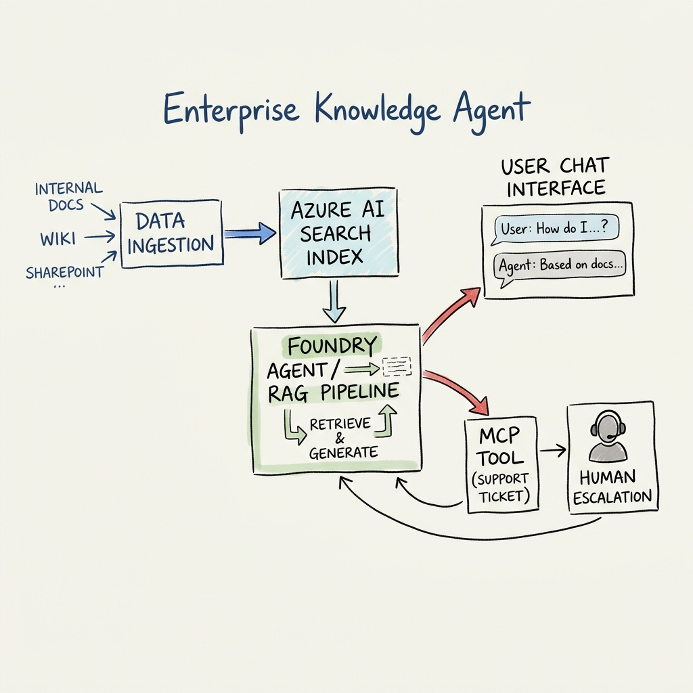

Enterprise Knowledge Agent
An autonomous AI assistant built on Azure AI Foundry that retrieves answers from internal documents and automatically escalates complex issues by filing human support tickets.
The Problem
The problem is not a lack of information.
It is a lack of findability and actionability.
Architecture
End-to-End RAG Pipeline & MCP Tool Integration

My Role & Ownership
Across the project, I owned the core technical build — the largest single share of the work (~65%). I set up the GitHub repository and project structure on Day 1, then moved into the Azure and Foundry foundation: creating the Azure AI Search resource, designing the index schema, and writing the ingestion contract that the rest of the team's modules were built against.
On Day 2, I wrapped that index in a Foundry IQ knowledge base and stood up the Foundry Agent Service agent itself, building the FastAPI backend that exposed a /chat endpoint returning grounded, cited answers — the core RAG pipeline the whole project sits on.
Day 3 was the agent's tool-calling capability: I built the custom MCP tool (a support-ticket action) and wired it into the agent so it could decide, on its own, when a question called for an action rather than just an answer. Day 4 added the confidence-based escalation logic — detecting low-confidence or out-of-scope questions and routing them to a human instead of letting the agent guess — and I ran the first full integration pass, pulling in the onboarding module and confirming the whole pipeline (ingestion → retrieval → agent → tool call) actually worked end-to-end rather than just in pieces.
On Day 5, I deployed the backend to a serverless container hosting platform to get a real public prototype link, and re-ran the evaluation set against that live deployment to catch anything that only broke outside local testing. On Day 6, I did the final check of backend logs and tracing, and took ownership of narrating the technical architecture for the demo video and live presentation.
I was responsible for the entire RAG-and-agent core of the project — retrieval, orchestration, tool-calling, the trust/escalation layer, and getting it live — while the rest of the team built the surrounding pieces (frontend, onboarding, evaluation, dashboard) against the contracts and endpoints I defined.